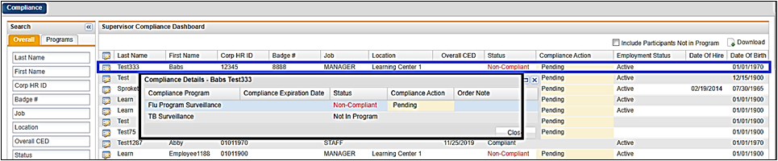
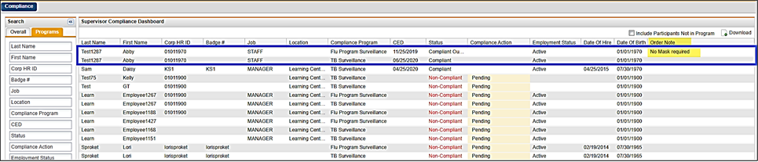
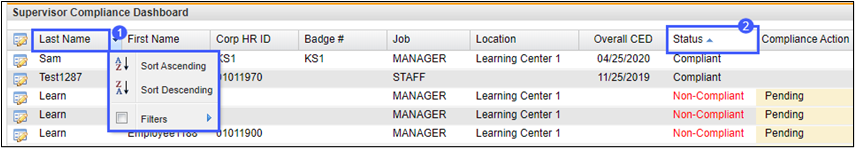
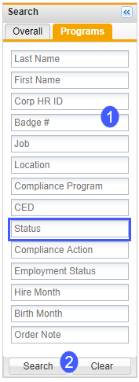
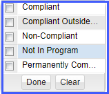
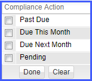
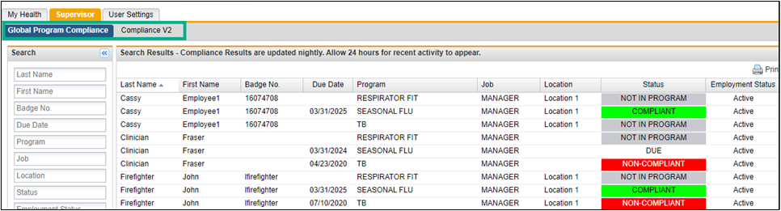

The Supervisor Tab can be used to determine The Compliance Status of your Direct Reports. To access the Supervisor Compliance Dashboard, do the following:
1. Go to the ReadySet URL (https://clientspecific.readysetsecure.com) and log in with your credentials.
2. Click the Supervisor Tab.
ReadySet displays compliance status information on the screen for the employees who report directly to you. If you do not see an employee that belongs in your list of direct reports, inquire with your HR department to make sure they are tied to you in your organization’s HR system.
There are 2 tabs available to display compliance: Overall and Programs


The following are the definitions of the different compliance statuses:
The following are the definitions of the different compliance actions:
You can sort the list of your employees by adjusting the ascending or descending order of the rows in the list by clicking on any column heading. A sort drop down list appears.
The following example shows two examples:

You can limit the employees you want to display in the Supervisor Portal view. You can choose to only see a single employee by typing in their first or last name, or badge number. You can choose to see an individual “Program”, for example the TB program, by typing in TB in the program field.
Choose any field, enter ID information or make choices from a drop-down list, and then click Search to bring back the results.


You can limit your search results to viewing an individual Status. For example, only viewing everyone who is Due This Month. These filter choices appear in a drop-down list when you select Compliance Action in the search fields.
Check the action you want to view, click Done, and then click Search at the bottom of the search fields.

You may also have an additional view in the Supervisor tab. The additional view is called Global Program Compliance and it is the standard compliance view for only Seasonal Flu, TB, and Respirator. The view will list each of your direct reports three times, one for Seasonal Flu, one for TB, and one for Respirator Fit compliance. This tab will not display compliance for any other programs, use the Compliance V2 for the compliance view of other programs.
